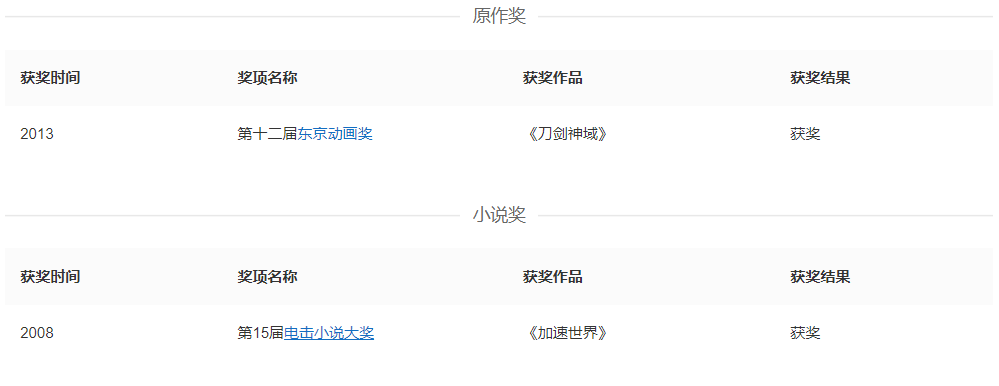

作者简介：川原砾
川原砾（かわはら れき），日本轻小说作家，出生于日本群马县，代表作品有《刀剑神域》、《加速世界》及《绝对的孤独者》系列。
川原砾（かわはら れき）是日本的男性轻小说作家，出生于日本群马县。
2008年时以《加速世界》获得第15届电击小说大奖大奖，2009年2月以该作品出道。同年4月,开始发售从2002年起就在自己的个人网站中发表的刀剑神域系列网络小说（网上连载时以九里史生为笔名）。
2012年12月川原砾取得大成功的人气轻小说《刀剑神域》和《加速世界》累计发行量突破1000万部。保持着惊异写作速度，每两个月就出版一本新刊的川原砾，成为“千万级作家”自09年2月出道以来仅用了3年11个月。出版业关系者表示，在这样短的时间内达成1000万部发行量，是至今为止闻所未闻的事情。
亚马逊中国发布了2012年度销量排行榜，川原先生在日本作家中排名第三（第一是村上春树，第二是头脑开发系列，第四是东野圭吾），并且在全体作家榜中也排到第46位。
2013年凭借《刀剑神域》获得第十二届东京动画奖原作奖。
获奖记录
